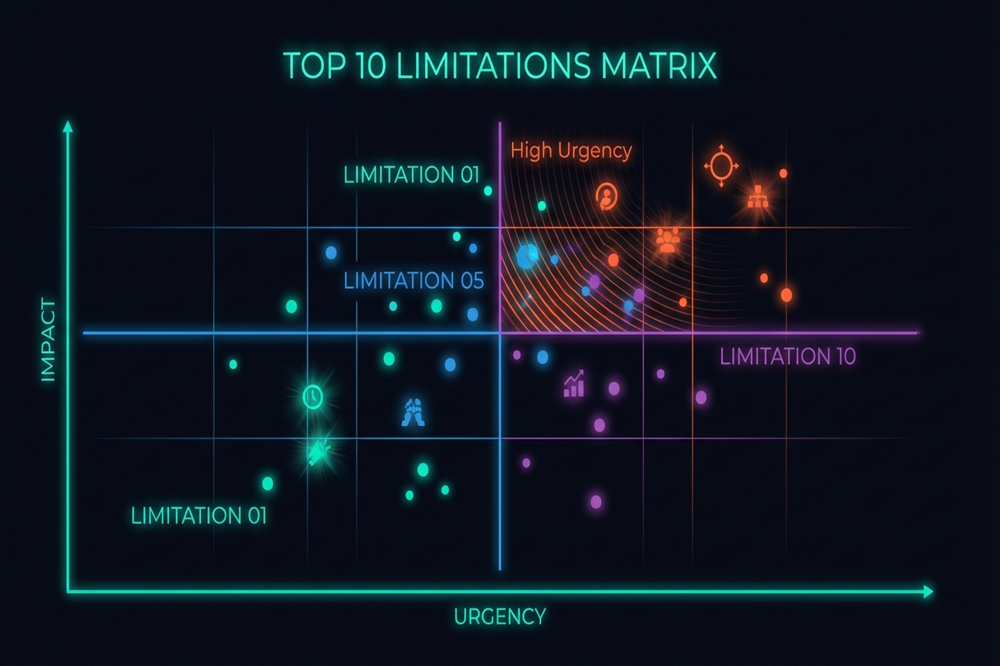
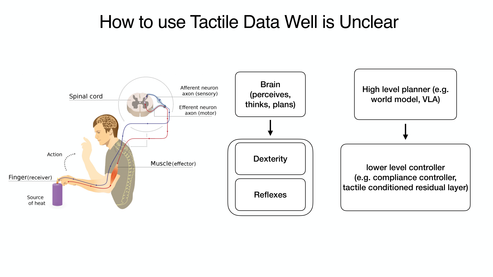

Chapter 13: Limitations and Future — Toward Physical AI for Manufacturing
Overview
This book has painted the full picture from tactile sensors to VLA models, from robot hands to industrial deployment. This final chapter systematically organizes the Top 10 common limitations across 131 papers, presents future research directions in five groups, identifies ten manufacturing-specific challenges, and proposes our research agenda.
After reading this chapter, you will be able to... - List the 10 most common limitations in tactile manipulation research. - Describe future directions across 5 research groups (sensing, learning, hardware, data, deployment). - Understand the 3-5 year gap between research demonstrations and manufacturing deployment. - Explain the mechanism-tactile-learning triangle as a research direction.
13.1 Top 10 Common Limitations
| Rank | Limitation | Frequency | Core Issue | Related Chapter |
|---|---|---|---|---|
| 1 | Sim-to-Real Gap | 20+ | Tactile harder than visual | Ch9 |
| 2 | Novel Object Generalization | 15+ | Material properties not captured | Ch7, Ch8 |
| 3 | Sensor Durability | 12+ | Gel wear, calibration loss | Ch2 |
| 4 | Data Scarcity | 12+ | ~10 demos/hr; tactile especially hard. However, EgoScale (NVIDIA, 2026) [21] discovered a log-linear scaling law for human data — with R²=0.998 across 20,854 hours of human data, performance improves predictably as data volume increases. This suggests that systematic data collection directly translates to performance gains | Ch3, Ch6 |
| 5 | Hardware Cost/Fragility | 10+ | No MTBF data | Ch4 |
| 6 | Cross-Embodiment Transfer | 10+ | Tactile: UniTacHand only. However, rapid progress in kinematic/visual domains during 2024-2026 — EgoMimic (Georgia Tech, 2024) [22]: 1hr human data > 2hr robot data (+34-228%); X-Sim (Cornell, CoRL 2025 Oral) [23]: real task success with zero robot data; VidBot (TU Munich, CVPR 2025) [24]: +20% zero-shot from internet video alone; EgoZero (2025) [25]: 70% success on 7 tasks from smart glasses only. A general solution for the tactile domain remains elusive, but cross-embodiment transfer possibilities are expanding rapidly | Ch10 |
| 7 | Multi-Modal Fusion Timing | 8+ | Vision 30Hz vs tactile 1000Hz | Ch8, Ch11 |
| 8 | Safety in Human Proximity | 7+ | ISO/TS 15066 not met | Ch5 |
| 9 | Long-Horizon Task | 7+ | Error compounding beyond 5-30s | Ch8 |
| 10 | Evaluation Standardization | 6+ | No established benchmark | Ch11 |

13.2 Future Research Directions (5 Groups)
A. Sensing & Perception
- Tactile foundation models at scale (Sparsh 460K → 10x+ needed)
- Neuromorphic sensors: spike-based, event-driven (NRE-skin)
- Self-healing/self-calibrating sensors for industrial longevity
- Sensor-agnostic representations (AnyTouch, Sensor-Invariant)
- Whole-hand dense tactile coverage as standard (F-TAC direction)
- Affordable compact F/T sensors: CoinFT [Choi et al., 2024] demonstrated that 6-axis F/T sensing at <$10 is achievable, but key challenges remain — vulnerability to tensile/peeling forces and the need for standardized packaging across different hand morphologies [Choi, SNU Seminar 2026]
B. Learning & Control
- VLA + tactile as first-class modality (ForceVLA [#1], Tactile-VLA)
- Post-deployment RL for continuous improvement (pi0.6 [#4]/RECAP)
- One-demo/zero-demo learning from human video
- World models with tactile feedback for model-based planning
- Hierarchical VLA for long-horizon dexterous tasks with error recovery
C. Hardware & Design
- Sub-$1K dexterous hands with integrated tactile (LEAP cost + F-TAC sensing)
- Modular, replaceable sensor skin (AnySkin 12-second replacement)
- Variable stiffness for safety + dexterity co-optimization (Seminar 3)
- Standardized hand-sensor integration (Digit Plexus direction)
D. Data & Simulation
- Tactile simulation fidelity (DiffTactile, TacEx)
- Massive synthetic data (NVIDIA 780K approach for tactile)
- Shared tactile datasets (Touch-and-Go 3M → 100M+)
- Cross-embodiment data reuse (OXE for hands)
- Explosive growth in egocentric data collection: EgoDex (Apple, 2025) [26] provides 829 hours and 90 million frames of hand manipulation data, while Ego4D (Meta) [27] offers 3,670 hours from 931 participants. Human egocentric video is emerging as a key data source for robot learning (→ Ch6.5)
- Scaling-law-driven data strategy: The log-linear scaling law discovered by EgoScale (NVIDIA, 2026) [21] (R²=0.998) demonstrates that systematically increasing human data volume yields predictable robot performance gains. This provides a quantitative basis for estimating ROI on data collection investments
E. Deployment & Application
- Safety certification for human-proximity dexterous manipulation
- Quality inspection via touch (defects invisible to cameras)
- Deformable object manipulation at production speed
- Multi-robot collaborative manipulation (Helix dual-robot)

13.3 Ten Manufacturing-Specific Challenges
The gap from research demonstration to manufacturing floor is typically 3-5 years:
| Challenge | Severity | Expected | Related Chapters |
|---|---|---|---|
| Cycle time matching | Critical | 3-5 yrs | Ch7, Ch8 |
| Multi-shift reliability (24/7) | Critical | 2-4 yrs | Ch2, Ch4 |
| Safety certification | Critical | 2-3 yrs | Ch5 |
| Sub-mm assembly + force control | High | 3-5 yrs | Ch7, Ch10 |
| Deformable material handling | High | 2-4 yrs | Ch7, Ch5 |
| Tool use (screwdriver, wrench) | High | 3-5 yrs | Ch7 |
| Maintenance by technicians | High | 2-4 yrs | Ch4, Ch12 |
| Mixed small-part bin picking | Medium | 1-3 yrs | Ch7 |
| Tactile quality inspection | Medium | 2-4 yrs | Ch2, Ch11 |
| ROI vs traditional automation | Medium | Ongoing | Ch12 |
Key Observation: Current factory deployments (BMW, Amazon, Mercedes) are at the logistics level. Dexterous assembly has not reached production. This book has clearly distinguished these capability levels.
13.4 Our Research Agenda: The Mechanism-Tactile-Learning Triangle
Synthesizing insights from all 12 preceding chapters into a unified research direction:
Axis 1 — Mechanism (Physical Intelligence):
When intelligent mechanisms induce continuous contact (→ Chapter 5), state stability improves and control simplifies.
Axis 2 — Tactile (Sensing):
When tactile sensors recognize the contact state during continuous contact (→ Chapter 2), finer force control and slip detection become possible. CoinFT's multi-axis sensing at ~360 Hz and ACP's ~500 Hz compliance control demonstrate that the required temporal resolution is achievable with current hardware [Choi, SNU Seminar 2026].
Axis 3 — Learning (VLA/Diffusion):
When VLA/Diffusion Policy leverages tactile feedback from stable contact (→ Chapters 7, 8), sample efficiency and generalization improve. The UMI-FT results validate this: policies trained with in-the-wild data achieved 100% success in unseen environments, versus 20% for lab-only training — demonstrating that data diversity enabled by scalable collection (Axis 2) directly improves learning (Axis 3) [Choi, SNU Seminar 2026].
Core Proposition: When mechanism physically guarantees continuous contact, tactile recognizes the contact state, and learning exploits this information — the burden on each axis is reduced and overall system robustness improves.


Additional Directions
- Shared Sensing Platform: Generalizing OSMO [#18]/UniTacHand [#16] cross-embodiment tactile transfer (→ Chapter 10.4)
- Factory-Specific Foundation Model: Tactile-visual foundation model specialized for factory environments
- Open Hardware + Open Data: Sub-$2K hands + Touch100k-scale dataset expansion
- Continuous-Contact Manipulation: Seminar 3's original insight — mechanism-induced continuous contact reduces sensing/learning burden
Key Counterintuitive Findings from 2024-2026
Recent studies report results that challenge conventional assumptions about robot learning:
- 1 hour of human data > 2 hours of robot data: EgoMimic [22] demonstrated that 1 hour of human demonstrations outperforms 2 hours of robot teleoperation by +34-228%. The quality and diversity of human data overwhelms the quantity of robot data.
- Human data alone can control robots: X-Sim [23] achieved real robot task success with zero robot data using only human video, EgoZero [25] achieved 70% success on 7 tasks from smart glasses demonstrations alone, and VidBot [24] achieved +20% zero-shot performance from internet videos only.
- Log-linear scaling: more human data yields predictably better performance: EgoScale [21] discovered a log-linear scaling law (R²=0.998) across 20,854 hours of human data. Analogous to scaling laws in large language models, this implies that systematic investment in human data collection leads to predictable improvements in robot performance.
Implications: These three findings challenge the prevailing paradigm that "robot learning requires robot data." Large-scale collection of human egocentric data combined with cross-embodiment transfer may be the key pathway to resolving the data bottleneck in tactile robotics.
Closing Message
Tactile sensing is the last puzzle piece of robotic manipulation. Three converging trends — cost reduction of vision-based sensors (GelSight → DIGIT $350 → Digit 360), democratization of open-source hands (Shadow $100K → LEAP $2K), and emergence of foundation models (RT-2 → pi0 → Gemini Robotics) — are driving tactile robotics at unprecedented speed.
As of 2026, touch is no longer optional. It is becoming standard.
And converting this standard into dexterous manipulation on manufacturing floors is the core challenge of "Physical AI for Manufacturing" — the vision this book proposes.
References
- Various. (2023). DeXtreme. ICRA 2023. scholar
- Various. (2025). Tactile Robotics: Past and Future. arXiv:2512.01106. scholar
- Bhirangi, R., et al. (2024). AnySkin. ICRA 2025. scholar
- Zhao, Z., Li, W., Li, Y., Liu, T., Li, B., Wang, M., Du, K., Liu, H., Zhu, Y., Wang, Q., Althoefer, K., & Zhu, S.-C. (2025). Embedding high-resolution touch across robotic hands enables adaptive human-like grasping. Nature Machine Intelligence. https://doi.org/10.1038/s42256-025-01053-3 #39 scholar
- Various. (2025). NRE-skin. PNAS. scholar
- Various. (2026). Bioinspired spiking architecture. Nature Communications. scholar
- Yu, J., et al. (2025). ForceVLA: Enhancing VLA models with a force-aware MoE for contact-rich manipulation. NeurIPS 2025. #1 scholar
- Various. (2025). Tactile-VLA. OpenReview. scholar
- Physical Intelligence. (2025). pi0.5/RECAP: Post-deployment RL for continuous improvement. arXiv preprint. arXiv:2504.16932. #4 scholar
- Shaw, K., et al. (2024). Learning from internet videos. CMU. scholar
- Si, Z., Zhang, G., Ben, Q., Romero, B., Xian, Z., Liu, C., & Gan, C. (2024). DiffTactile: A physics-based differentiable tactile simulator. ICLR 2024. scholar
- Various. (2024). TacEx: GelSight tactile simulation in Isaac Sim. arXiv preprint. arXiv:2411.04776. scholar
- NVIDIA. (2026). 780K trajectories in 11 hours. GTC 2026. scholar
- Various. (2025). OSMO. arXiv:2512.08920. #18 scholar
- Zhang, Y., et al. (2025). UniTacHand. Various. #16 scholar
- Bicchi, A. (2000). Hands for dexterous manipulation. IEEE T-RA. scholar
- Billard, A., & Kragic, D. (2019). Trends and challenges. Science. scholar
- Various. (2026). VLA systematic review. Information Fusion. scholar
- Various. (2025). What matters in building VLA models. Nature MI. scholar
- Hogan, N. (1985). Impedance control. JDSMC. scholar
- Bansal, A., et al. (2026). EgoScale: Scaling laws for egocentric human data in robot learning. arXiv preprint. NVIDIA Research. scholar
- Kareer, S., et al. (2024). EgoMimic: Scaling imitation learning via egocentric video. arXiv preprint. Georgia Tech. scholar
- Rishabh, A., et al. (2025). X-Sim: Cross-embodiment simulation for robot learning. CoRL 2025 (Oral). Cornell University. scholar
- Bahl, S., et al. (2025). VidBot: Learning robot policies from internet videos. CVPR 2025. TU Munich. scholar
- Wang, Y., et al. (2025). EgoZero: Robot learning from smart glasses demonstrations. arXiv preprint. scholar
- Apple ML Research. (2025). EgoDex: Learning dexterous manipulation from large-scale egocentric video. 829 hours, 90M frames. arXiv preprint. scholar
- Grauman, K., et al. (2022). Ego4D: Around the world in 3,000 hours of egocentric video. CVPR 2022. Meta AI. 3,670 hours, 931 participants. scholar